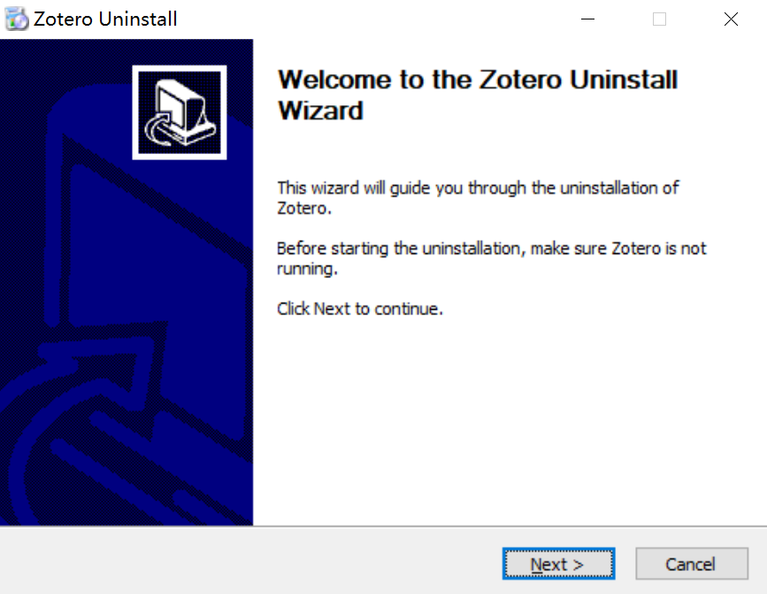
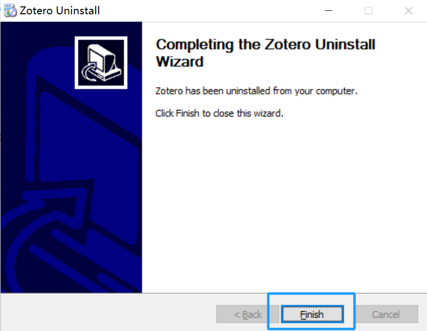

7.1 如何卸载Zotero（win版）
本节为您介绍如何在Windows系统的电脑上卸载Zotero。
-
按“Windows”+“I”键打开“设置”窗口，或点击“开始”菜单中的齿轮图标。

-
在设置窗口中，点击 “应用”，进入应用程序设置。

-
在应用列表中找到 Zotero，或在搜索框中输入“Zotero”。

-
点击 Zotero，点击 “卸载” 按钮，确认卸载。


-
在Zotero Uninstall窗口中点击“Next”，进入下一步。

-
点击“Uninstall”。

-
点击“Finish”，卸载完成。
